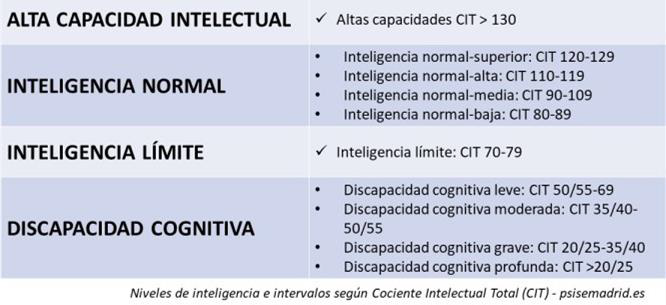
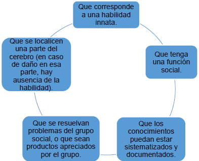
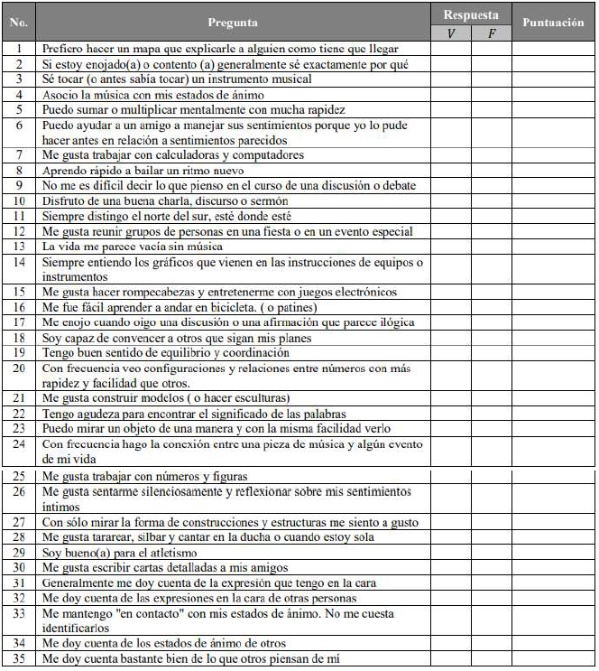

9 UNIDAD I: INTELIGENCIA E INTELIGENCIAS MÚLTIPLES.
Objetivos
Reconocer la definición de inteligencia desde el nuevo paradigma educativo y las diversas inteligencias que destacan en el proceso de enseñanza aprendizaje.
9.1 Definición de Inteligencia.
Tradicionalmente, se ha tenido la idea de inteligencia como entidad única que se tiene en mayor o menor medida y que es complejo de modificar.
Gardner (1983), en su obra Estructura de la Mente, define la inteligencia como “la capacidad para resolver productos valorados, al menos en un contexto cultural o en una comunidad determinada”. Propone la existencia de ocho inteligencias.
Gardner define la inteligencia como “un conjunto de habilidades mentales que no solo se manifiestan de forma independiente, sino que tal vez estén localizadas en diferentes regiones del cerebro. Cada inteligencia nunca existe aisladamente de las otras”.
9.1.1 ¿Qué es la teoría de las inteligencias múltiples?
El concepto de Inteligencias Múltiples surgió en 1983 gracias a los estudios de Howard Gardner.
Gardner fue un psicólogo, estudioso y profesor de la Universidad de Harvard que se dedicó a investigar las capacidades cognitivas del ser humano.
Con sus estudios llegó a la conclusión que cada individuo puede tener diversos tipos de inteligencias que se pueden agrupar en 12 tipos diferentes.
9.1.2 ¿Cómo se mide la inteligencia?
Los tests de inteligencia en general arrojan una impresión promedio de las distintas capacidades mentales de un individuo. Usualmente las promedian en una cifra o un porcentaje que exprese, de algún modo, si los talentos del individuo están por encima o por debajo de la media (como el coeficiente intelectual o CI).

| ALTA CAPACIDAD INTELECTUAL | Altas capacidades CIT > 130 |
|---|---|
| INTELIGENCIA NORMAL | Inteligencia normal-superior: CIT 120-129 Inteligencia normal-alta: CIT 110-119 Inteligencia normal-media: CIT 90-109 Inteligencia normal-baja: CIT 80-89 |
| INTELIGENCIA LÍMITE | Inteligencia límite: CIT 70-79 |
| DISCAPACIDAD COGNITIVA | Discapacidad cognitiva leve: CIT 50/55-69 Discapacidad cognitiva moderada: CIT 35/40- 50/55 Discapacidad cognitiva grave: CIT 20/25-35/40 Discapacidad cognitiva profunda: CIT >20/25 |
9.2 Inteligencias múltiples.
Gardner sostiene que para que una habilidad sea considerada ‘inteligencia’, debe cumplir con ciertos criterios (Serrano, 2005:27) que se enumeran a continuación:
Que corresponda a una habilidad innata.
Que se localice en una aprte del cerebro (en caso de daño en esa parte, hay ausencia de la habilidad).
Que tenga una función social.
Que los conocimientos puedan estar sistematizados y documentados.
Que se resuelvan problemas del grupo social, o que sean productos apreciados por el grupo.

Estos criterios ubican a las habilidades como inteligencias individuales y no como componentes de la inteligencia, planteamiento que se cuestiona en relación con los factores específicos (habilidades intelectuales) y los factores generales que componen a la inteligencia; sin embargo, lo más importante en Gardner es que contradiciéndose a este planteamiento y aunque no lo diga explícitamente, agrupa las habilidades en distintas inteligencias.
La mayoría de las dimensiones que conforman la visión holística, pueden verse reflejadas e interrelacionadas en los distintos tipos de inteligencias, que hasta la actualidad ha caracterizado Gardner:
Inteligencia lógica-matemática
Inteligencia lingüística
Inteligencia visual-espacial
Inteligencia musical
Inteligencia kinestésico-corporal
Inteligencia interpersonal (social)
Inteligencia intrapersonal (interna)
Inteligencia naturalista
Inteligencia espiritual
9.2.0.1 Inteligencia lingüística
Es la capacidad de formular el pensamiento en palabras y usar el lenguaje de manera eficaz. Incluye la sensibilidad para los sonidos, los significados y las funciones de las palabras, Nos permite recordar, analizar, resolver problemas, planificar y crear. M del Pozo (2005).
Patologías referentes a esta inteligencia: afasia, dislexia y disfasia. Esta inteligencia se relaciona especialmente con la lógico-matemática y cinestésica corporal.
Para optimizar este tipo de inteligencia, los niños necesitan oír muchas palabras nuevas, participar en conversaciones estimulantes, construir con palabras o imágenes discursos, historias, etc. Y aprender idiomas nuevos.
Las habilidades propias de la inteligencia lingüística son:
Describir
Narrar
Comparar
Relatar
Observar
Valorar
Sacar conclusiones
9.2.0.2 Inteligencia lógico-matemática
Es la inteligencia que hace posible cálculos, cuantificar, considerar proposiciones, establecer y comprobar hipótesis y llevar a cabo operaciones matemáticas complejas. Implica diferentes componentes como cálculos matemáticos, pensamiento lógico, resolución de problemas, razonamiento deductivo e inductivo y la relación entre patrones y relaciones. Los estudiantes con este tipo de inteligencia rinden por encima de la media en Matemáticas.
Esta inteligencia tiene una capacidad alta en tres tipos de razonamientos:
Razonamiento lógico: es capaz de descubrir relaciones numéricas, le gusta hacer cálculos, puede hacer cálculos aproximados y le gusta cuantificar información.
Razonamiento espacial: descubre pautas espaciales, le gustan los rompecabezas y utiliza imágenes para visualizar y conceptualizar un problema.
Resolución lógica de problemas: Se centra en las relaciones y la estructura general del problema y no en datos aislados, hacen inferencias lógicas, desarrolla y utiliza estrategias.
Las habilidades propias de la inteligencia lógico matemática son:
Enumerar
Hacer series
Deducir
Medir
Comparar
Sacar conclusiones
Verificar
Esta inteligencia tiene una capacidad alta en tres tipos de razonamientos:
Razonamiento lógico: es capaz de descubrir relaciones numéricas, le gusta hacer cálculos, puede hacer cálculos aproximados y le gusta cuantificar información.
Razonamiento espacial: descubre pautas espaciales, le gustan los rompecabezas y utiliza imágenes para visualizar y conceptualizar un problema.
Resolución lógica de problemas: Se centra en las relaciones y la estructura general del problema y no en datos aislados, hacen inferencias lógicas, desarrolla y utiliza estrategias.
9.2.0.3 Inteligencia viso-espacial
Es la capacidad para percibir con precisión el mundo visual y espacial, llevar a cabo transformaciones sobre las percepciones e imaginar movimiento o desplazamiento.
Las personas con inteligencia viso-espacial diferencian formas y objetos incluso cuando se ven desde diferentes ángulos, elaboran y utilizan mapas, decodifican información gráfica, etc.
Son destacados en esta inteligencia las profesiones como ingenieros, arquitectos, urbanistas, artistas gráficos, fotógrafos, pilotos, comunicadores audiovisuales, etc.
Las habilidades propias de esta inteligencia espacial son:
Localizar en el espacio y tiempo
Comparar
Observar
Deducir
Relatar
Combinar
Transferir
9.2.0.4 Inteligencia musical y corporal-cinestésica
La inteligencia musical comprende la reacción al estímulo musical, a la percepción, discriminación transformación y expresión de sensaciones y emociones a través de la música.
La inteligencia corporal- cinestésica, por sí sola, en cambio, es la habilidad para utilizar el propio cuerpo para competir en juegos como es el caso del deporte, para crear productos nuevos (se relaciona con la creatividad y la inventiva).
Son altamente capaces de ejecutar o producir música, estableciendo un sistema sencillo o incluso avanzado de ritmos y de notas.
Una característica es el fácil aprendizaje de lenguajes simbólicos como el Braille y la lengua de signos, manejo de objetos con destreza, flexibilidad, coordinación, balance, fuerza y velocidad.
9.2.0.5 Inteligencia naturalista
Es la sensibilidad y comprensión del mundo natural, corresponde a la capacidad de identificación del lenguaje natural y capacidad de curiosidad y disfrute ante el paisaje.
Las características propias de esta inteligencia son distinción, clasificación y uso de elementos del medio ambiente para comprobar hipótesis.
Tienen habilidades destacadas en:
Relatar
Demostrar
Discriminar
Coleccionar
Analizar
Cuidar
Organizar y categorizar
Plantear hipótesis
Trabajar con las plantas
Clasificar
Inteligencia emocional: Inteligencias intrapersonal e interpersonal
El concepto de inteligencia emocional es la habilidad para atender y percibir los sentimientos de forma apropiada y precisa, la capacidad para asimilarlos y comprenderlos de manera adecuada y la destreza para regular y modificar nuestro estado de ánimo o el de los demás. Está conformada por las inteligencias intrapersonal e interpersonal determinando nuestra capacidad de dirigir nuestra vida y las situaciones que experimentamos a diario.
9.2.0.6 Inteligencia Intrapersonal
• Es la capacidad para acceder a los sentimientos propios y discernir las emociones íntimas, pensar sobre los procesos de pensamiento (metacognición).
• Una patología que se puede desarrollar de esta inteligencia es la incapacidad para expresar abiertamente sentimientos, cambios de personalidad, ya que la persona puede tener irritabilidad o euforia como sensaciones extremas o, al contrario, demostrar indiferencia, lentitud o apatía, es decir, un tipo de personalidad depresiva.
9.2.0.7 Inteligencia Interpersonal
Se considera como la capacidad de percibir y comprender a otras personas, descubrir las fuerzas que impulsan a sentir gran empatía por el otro, discernir de manera adecuada a los estados de ánimo, las motivaciones, los temperamentos y los deseos de los demás.
Se destacan en esta inteligencia las señales sociales, es decir la persona suele ser muy expresiva, abierta y lo demuestra con gestos corporales y expresiones faciales. Las profesiones que destacan son buenos vendedores, expertos en relaciones públicas, profesores, terapeutas, líderes, consejeros, psicólogos, etc.
9.2.0.8 Inteligencia espiritual
“Supone la capacidad del ser humano para plantearse y considerar las preguntas más profundas: ¿Quiénes somos? ¿Por qué estamos aquí?, ¿Qué nos va a ocurrir?, ¿Por qué morimos?” (Gardner, 2006:59). Gardner ha considerado la probabilidad de que exista una novena inteligencia, la llamada inteligencia existencial, religiosa o espiritual.
Sin embargo, según el propio autor, tras haberla analizado, no cumple los criterios de una inteligencia, aunque reconoce que sí cumple un componente de la espiritualidad: el pensamiento existencial.
Sus características son: comprender que los comportamientos trascendentes son el perdón, la gratitud, la humildad y la compasión; considerar que la responsabilidad social, la cooperación, la dimensión ética, fraternidad y solidaridad son factores necesarios para el comportamiento igualitario y equitativo; cumplir promesas bajo el análisis de lo que es propio y adecuado; distinguir como guía sus principios personales, antes de guiarse con principios de otros que afecten su vida y la de los demás; respetar la dignidad personal y de los demás; entre otros.
9.3 Diagnóstico de Inteligencias múltiples.
Existen distintas maneras de realizar el diagnóstico de las Inteligencias múltiples, desde el Cuestionario de las Inteligencias múltiples creado por Howard Gardner hasta cuestionarios específicos para cada una de las inteligencias en particular.
Para uso en esta guía didáctica se analizará el Cuestionario de Gardner.
Para resolver este cuestionario se deberá colocar V (Verdadero) o F (Falso) según corresponda a cada uno de los enunciados sobre características que resaltan en la persona.
| Inteligencia | Ítem |
|---|---|
| Inteligencia Verbal | 9. No me es difícil decir lo que pienso en el curso de una discusión o debate. |
| 10. Disfruto de una buena charla, discurso o sermón. | |
| 17. Me enojo cuando oigo una discusión o una afirmación que parece ilógica. | |
| 22. Tengo agudeza para encontrar el significado de las palabras. | |
| 30. Me gusta escribir cartas detalladas a mis amigos. | |
| Inteligencia Lógico-matemática | 5. Puedo sumar o multiplicar mentalmente con mucha rapidez |
| 7. Me gusta trabajar con calculadoras y computadores. | |
| 15. Me gusta hacer rompecabezas y entretenerme con juegos electrónicos | |
| 20. Con frecuencia veo configuraciones y relaciones entre números con más rapidez y facilidad que otros. | |
| 25. Me gusta trabajar con números y figuras | |
| Inteligencia Visual espacial | 1. Prefiero hacer un mapa que explicarle a alguien como tiene que llegar. |
| 11. Siempre distingo el norte del sur, esté donde esté. | |
| 14. Siempre entiendo los gráficos que vienen en las instrucciones de equipos o instrumentos. | |
| 23. Puedo mirar un objeto de una manera y con la misma facilidad verlo. | |
| 27. Con sólo mirar la forma de construcciones y estructuras me siento a gusto. | |
| Inteligencia kinestésica-corporal | 8. Aprendo rápido a bailar un ritmo nuevo. |
| 16. Me fue fácil aprender a andar en bicicleta. ( o patines) | |
| 19. Tengo buen sentido de equilibrio y coordinación. | |
| 21. Me gusta construir modelos ( o hacer esculturas) | |
| 29. Soy bueno(a) para el atletismo. | |
| Inteligencia Musical-rítmica | 3. Se tocar (o antes sabía tocar) un instrumento musical. |
| 4. Asocio la música con mis estados de ánimo. | |
| 13. La vida me parece vacía sin música. | |
| 24. Con frecuencia hago la conexión entre una pieza de música y algún evento de mi vida. | |
| 28. Me gusta tararear, silbar y cantar en la ducha o cuando estoy sola. | |
| Inteligencia Intrapersonal | 2. Si estoy enojado(a) o contento (a) generalmente sé exactamente por qué. |
| 6. Puedo ayudar a un amigo a manejar sus sentimientos porque yo lo pude hacer antes en relación a sentimientos parecidos. | |
| 26. Me gusta sentarme silenciosamente y reflexionar sobre mis sentimientos íntimos. | |
| 31. Generalmente me doy cuenta de la expresión que tengo en la cara | |
| 33. Me mantengo «en contacto» con mis estados de ánimo. No me cuesta identificarlos. | |
| Inteligencia Interpersonal | 12. Me gusta reunir grupos de personas en una fiesta o en un evento especial. |
| 18. Soy capaz de convencer a otros que sigan mis planes. | |
| 32. Me doy cuenta de las expresiones en la cara de otras personas. | |
| 34. Me doy cuenta de los estados de ánimo de otros. | |
| 35.Me doy cuenta bastante bien de lo que otros piensan de mí. |

Para calcular el resultado debes hacer lo siguiente:
1. Revisa las preguntas en el siguiente orden dado a. 9 -10-17-22-30 =
b. 5-7-15-20-25 =
c. 1-11-14-23-27=
d. 8-16-19-21-29=
e. 3-4-13-24-28=
f. 2-6-26-31-33=
g. 12-18-32-34-35=
2. Si en cualquiera de ellas pusiste verdadero asígnale un punto a cada una.
3. Posteriormente suma los puntos de cada fila, cada una de las filas corresponde a una de las inteligencias, la que tenga el mayor valor, corresponderá a la inteligencia que tendrás.
a. Inteligencia Verbal
b. Inteligencia Lógico-matemática
c. Inteligencia Visual espacial
d. Inteligencia kinestésica-corporal
e. Inteligencia Musical-rítmica
f. Inteligencia Intrapersonal
Entre otros Cuestionarios sobre Inteligencias múltiples, destacan los siguientes:
Guía para identificar las inteligencias múltiples de Kértesz
Autodiagnóstico de inteligencias múltiples de Kline & Saunders
Diagnóstico de inteligencias múltiples predominantes de Sánchez G
Diagnóstico de inteligencias múltiples predominantes II de Sánchez G
Diagnóstico de inteligencias múltiples predominantes III de Sánchez G
9.4 Estrategias potenciadoras de las Inteligencias múltiples: Aplicaciones prácticas.
A continuación, se presenta un amplio banco de estrategias a considerar para potenciar las Inteligencias múltiples. Es interesante que las actividades pueden considerarse como una base para el desarrollo de variantes de acuerdo a los niveles y edades de enseñanza. Tanto niños, adolescentes y adultos poseemos un aspecto espiritual y emocional que se puede despertar mediante estas actividades y así potenciar el autoconocimiento y determinar las características positivas.
9.4.1 Estrategias para Inteligencia Lógico-matemática
Utilizar mapas mentales.
Utilizar rompecabezas.
Deducir mensajes a través de señales.
Ordenar imágenes de historias.
Inventar adivinanzas.
Plantear situaciones problemáticas que impliquen presupuestos de gastos.
Descubrir el uso de herramientas digitales (sin uso de instrucciones, es decir por intuición).
Ordenar y clasificar espacios y objetos dentro del espacio de clases o en un ambiente virtual de aprendizaje
9.4.2 Estrategias para Inteligencia lingüística
Inventar letras de canciones a partir de una ya existente
Leer cuentos o poemas y libros en voz alta
Promover debates, exposición de conferencias o diálogos para defender ideas
Explicar en voz alta mapas mentales elaborados por ellos mismos
Promover la invención de historias absurdas y escribirlas
Simulación de juicios, juego de roles abogado defensor, acusador y juez mediador
Narrar vivencias personales y escribirlas
Cambiar finales de los cuentos.
9.4.3 Estrategias para Inteligencia visual-espacial
Localizar direcciones en mapas (físicos u online)
Ilustrar cuentos
Jugar ajedrez
Realizar mapas mentales para expresar textos o emociones
Utilizar películas, diapositivas, documentales o presentaciones visuales para mostrar el contenido
Elaborar, resolver, o salir de laberintos
Resolver crucigramas
Explicar con mímicas.
9.4.4 Estrategias para la Inteligencia musical
Inventar la letra de canciones
Tocar instrumentos musicales
Bailar al ritmo de la música
Aprender idiomas
Adivinar canciones escuchando solo segundos de la melodía o letra
Cantar
Imitar sonidos
Trabajar con software o instrumentos para crear o mezclar música
9.4.5 Estrategias para la Inteligencia kinestésico-corporal
Realizar trabajos manuales
Bailar
Hacer esculturas
Hacer representaciones teatrales
Realizar activación física cada 20 o 30 minutos (sobre todo en niños pequeños)
Practicar ejercicios de gimnasia para el cerebro
Hacer maquetas
Pintar
Desarmar y armar maquinarias pequeñas (relojes, calculadoras, robots, etc.)
Imitar personajes movimientos característicos de estos, expresiones
9.4.6 Estrategias para Inteligencia Interpersonal
Ejercicios para mejorar la empatía
Expresar verbalmente en voz alta las emociones
Ejercicios de observación de las emociones respecto de las circunstancias, actitudes y tono de voz de otros
Ayudar a compañeros a desarrollar tareas varias
Organizar y liderar actividades en equipo
Propiciar que los estudiantes creen sus propias normas de comportamiento dentro del salón de clases
Evitar la monotonía en las actividades de clase
Propiciar espacios de debate e interacción
9.4.7 Estrategias para Inteligencia Intrapersonal
Ejercicios de relajación y respiración en clase
Practicar ejercicios de meditación
Reflexionar sobre los valores y creencias personales
Reflexionar sobre las causas que originan determinados sentimientos
Promover que los estudiantes pasen momentos de reflexión en solitario en relación con metas personales
Promover que el estudiante valore las capacidades propias de su edad para potenciarlas
Facilitar la comunicación no verbal en el aula
Con la colaboración de los estudiantes, plantear diferentes soluciones de problemáticas de condiciones particulares que viven los estudiantes
9.4.8 Estrategias para Inteligencia Naturalista
Ejercicios para potenciar la habilidad intelectual de observación
Ejercicios para potenciar la habilidad intelectual de clasificación y clasificación jerárquica
Promover el cultivo y cuidado de plantas para el salón de clases o en los jardines de la escuela
Realizar campañas para el cuidado del medio ambiente y sus elementos: agua, reciclaje, etc.
Promover mesas de discusión sobre el tema de ética ambiental
Reflexionar acerca de juegos que promueven el maltrato y matanza animal Realizar ferias fotográficas en las que se promueva el cuidado del medio ambiente
Clasificar distintos tipos de piedras y hojas de árboles
9.4.9 Estrategias para Inteligencia Espiritual
Organizar actividades altruistas
Promover discusiones o investigaciones en relación con la ética y la verdad
Reflexionar acerca de la importancia de la familia como núcleo de la sociedad
Reflexionar acerca de la importancia de los valores éticos, cívicos y morales
Recuperar la historia biográfica de grandes pensadores en torno a la búsqueda de la verdad
Discutir sobre el dolor (personal y ajeno) y las estrategias para afrontarlo
Promover cursos para el control del estrés y el equilibrio interior
Realizar actividades para fomentar la autoestima y el respeto a los demás